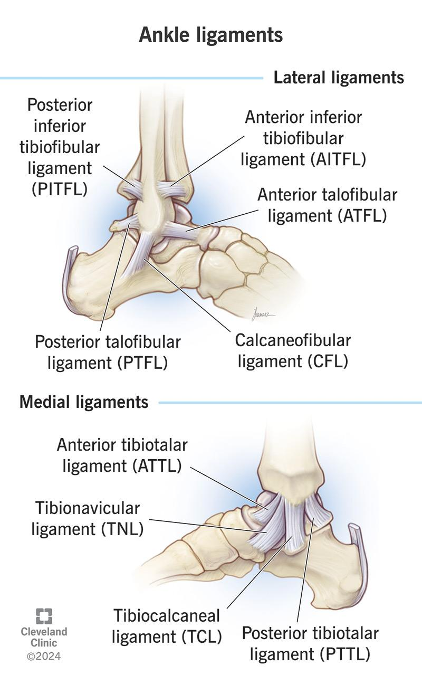
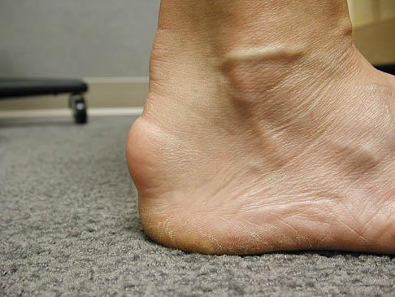
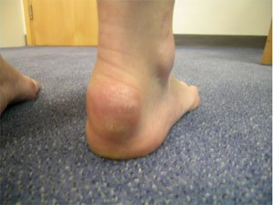
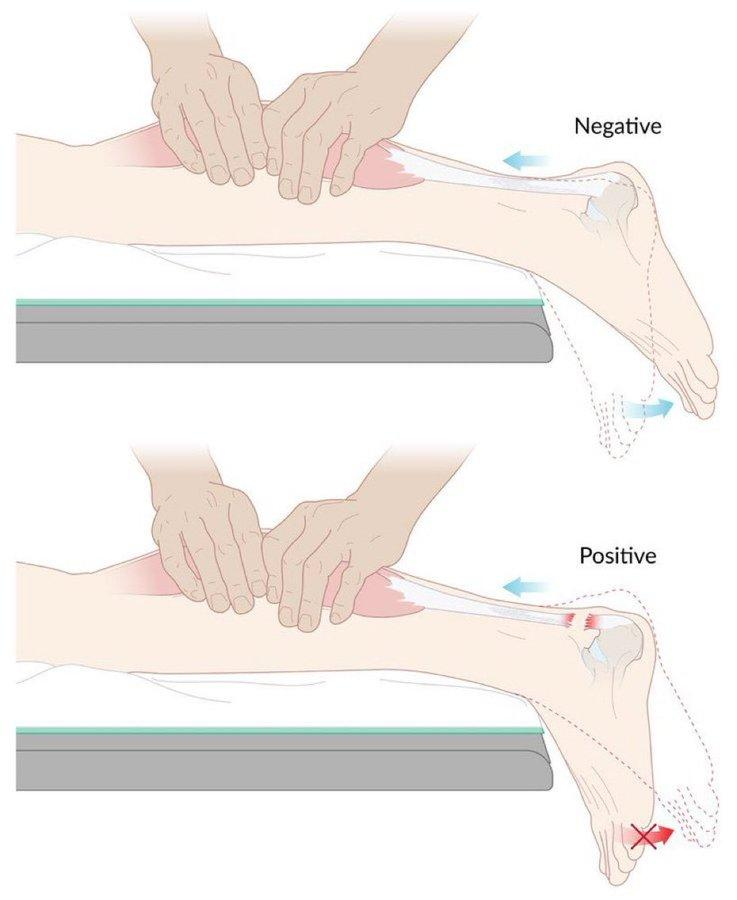
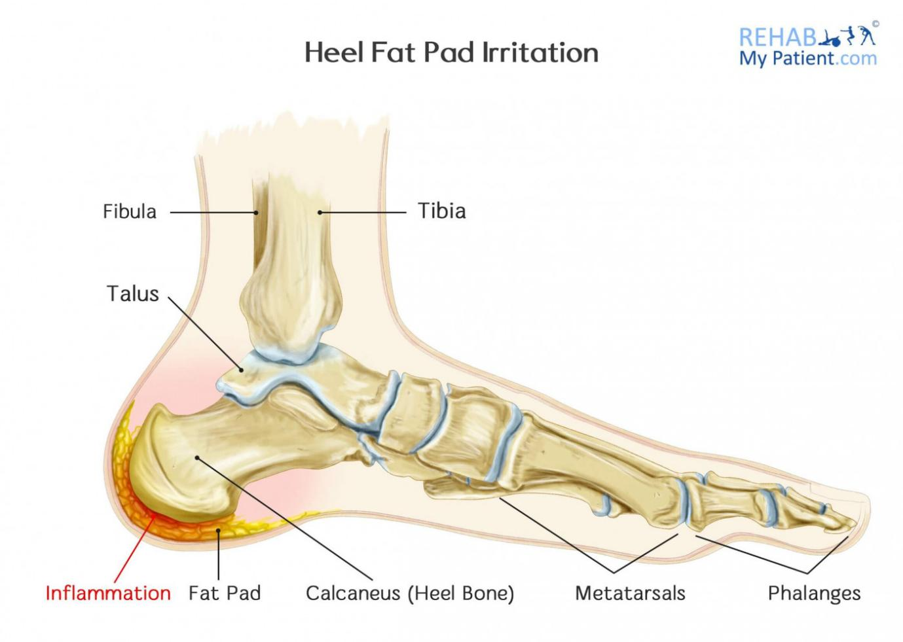
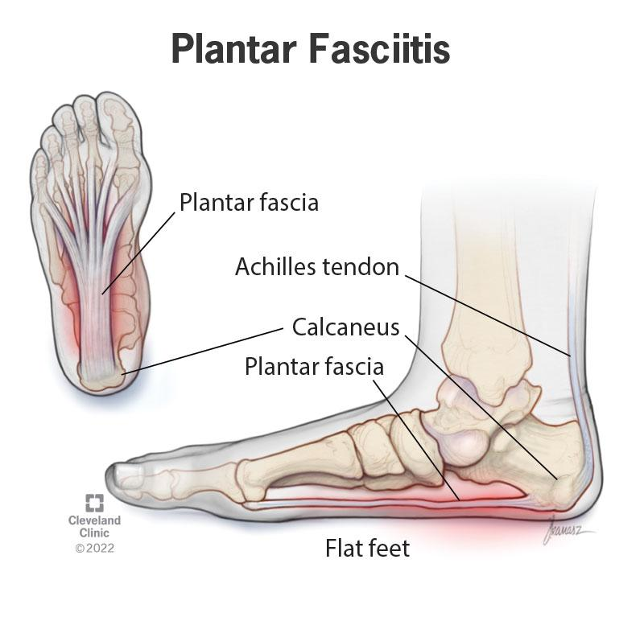
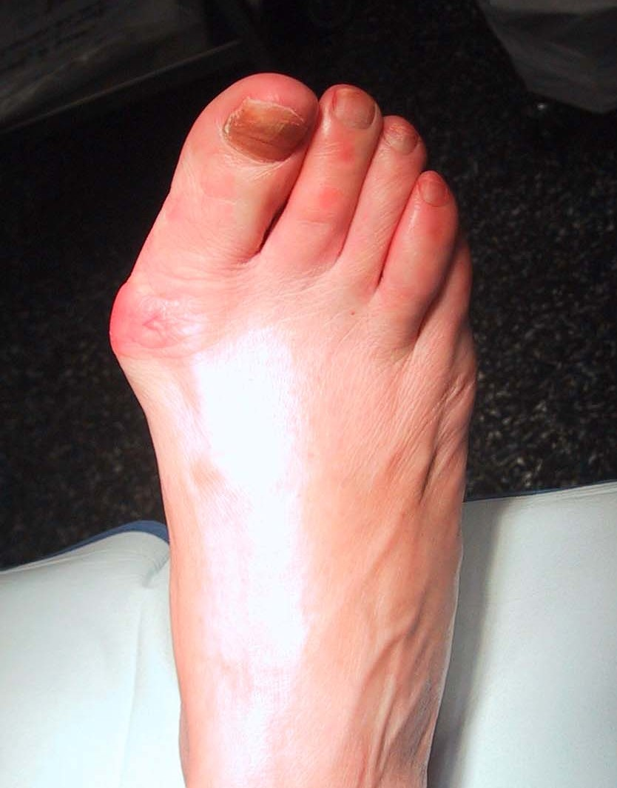
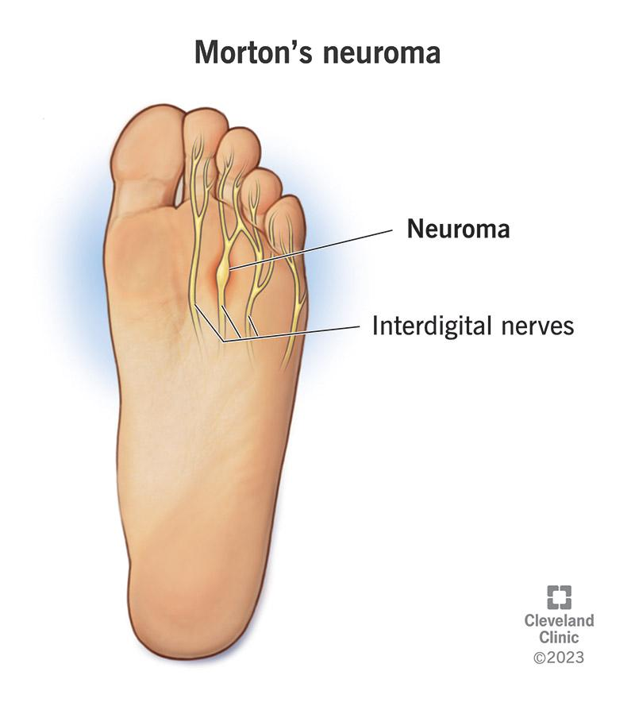

ANKLE PAIN
When a patient says “I have foot pain”:
- We divide it into:
- Pain at the back of the foot
- Pain at the front of the foot
- Pain at the back of the foot
- The ankle is connected to the foot, so we do an ankle + foot approach
We draw an imaginary line:
- Back of the foot → Hindfoot pain
- Front of the foot → Forefoot pain
Your next patient is a 50 year old man who has presented to you complaining of Foot pain.
How would you approach this case?
Differential Framework for foot and ankle pain
A. Bone / Joint Problems
- Osteoarthritis
- Rheumatoid arthritis
- Psoriasis
- Gout
- Reactive arthritis
- IBD related arthritis
B. Soft Tissue Problems
- Achilles tendonitis
- Bursitis
- Tender heel pad / tender fat pad
- Plantar fasciitis
- Tibial tendonitis
- Peroneal tendonitis
C. Neurovascular
Vascular
- Peripheral vascular disease
- DVT
Neurological
- Lumbar radiculopathy
- Tarsal tunnel syndrome
- Sensory neuropathy
D. Red Flags
- Malignancy
- Metastasis
- Infection
E. Trauma
- Stress fracture
- Other fractures
- Ankle ligament tears
This list mainly applies to:
- Ankle pain
- Hindfoot pain (back of foot)
6. Forefoot (Metatarsalgia) Add-Ons
When pain is in the front of the foot, add:
- Morton’s neuroma
- Nail problems
- Ingrown toenail
- Paronychia
- Ingrown toenail
- Deformities
- Bunion
- Hallux valgus
- Bunion
- Skin lesions
- Calluses
- Corns
- Warts
- Calluses
8. Red Flags in History
- Night pain
- Fever
- Weight loss
- Systemic symptoms
- Burning pain → nerve problem
AMC case:
Foot pain with burning quality
Sprained Ankle
Features:
- Ankle gives way and unstable
- Difficulty bearing weight
- Bruising → severe inj & lig tears

Achilles Tendonitis / Tendinopathy
- Acute = tendonitis
- Chronic = tendinosis
Features:
- Thickened tendon
- Bump at insertion
- Degenerative & inflammatory changes


Achilles Rupture
- Sudden onset severe pain
- Pain later improves after the acute stage
- Limping
- Especially Difficulty tip-toeing
Test
- Thompson test → no plantar flexion

11. Heel Pad (Tender Fat Pad)
- Fat pad under heel
- Shock absorber
- Many nerve endings
- Very painful

12. Plantar Fasciitis

Key features:
- Pain on sole / under the heel
- Worse after rest
- Worst with first steps in morning
- Improves with walking
- Worse again at end of day
- Worse after sitting
Not related to footwear
13. Osteoarthritis
Very commonly involves the first MTP joint
- Hallux rigidus = osteoarthritis of big toe (1st MTP)
- Gradual loss of motion in the toe
- Painful & Restricted movement
- Gradual loss of motion in the toe
- Hallux valgus = bunion
- Deformity in the 1st MTP
- Usually no painful restriction
- Pain can be present if inflamed or shoe pressure
- Deformity in the 1st MTP

Both will give some degree of deformity in the joint
14. Tibial & Peroneal Tendonitis
- Tibial → inner ankle → inversion
- Peroneal → outer ankle → eversion
Pain patterns:
- Peroneal
- Pain on passive inversion
- Pain on resisted eversion
- Pain on passive inversion
- Tibial
- Pain on passive eversion
- Pain on resisted inversion
- Pain on passive eversion
15. Stress Fracture
- Can occur with regular exercise or dancing
- Exam and X-ray often normal
16. Morton’s Neuroma

Cause
- Nerve between metatarsals
- Tight shoes compress nerve
Common sites:
- Between 3rd–4th
- Sometimes 2nd–3rd
Features
- Burning pain
- Worse on hard surfaces
- Worse with tight shoes
- Better when shoes removed
- Feels like a “pebble in the shoe”
17. Corns & Calluses
- Callus → thick epidermis
- Corn → hard keratin core
18. Burning Foot Pain
Think:
- Neuropathy
- Nerve entrapment> tarsal tunnel sx
- Morton’s neuroma
- Vascular disease> ischemic pain
- Restless leg syndrome
- psychogenic
19. Restless Leg Syndrome
Features:
- Electric-shock sensation
- Worse at night
- Improves by moving legs
- Common in iron deficiency
20. Chillblains
- Localized Cold-induced inflammation
- Red, swollen, painful toes
- No fever
21. AMC Ankle Pain Case
Stem> 40 yrs old man C/O ankle pain for 2 days. He was gardening before this started.
TASK:
Take Hx for 6 minutes
PE will appear on screen after 6 minutes
Explain Dx and DDx
Request investigations
40-year-old man, ankle pain for 2 days, after gardening
22. History Structure
Open Question> how I can help u today? > address concern
“How can I help you today?”
“Tell me more about your ankle pain.”
Explore Pain
- Site (front, back, inner, outer side)
- Severity (1–10)
- Quality (dull, sharp, burning)
- Onset
- Duration
- Constant or intermittent
- Worse or better, is this the first time u r having this pain
- Radiation
- Function (work, daily life)
23. Pattern
- Night pain
- Morning stiffness
- Worse after activity or rest
- Limping
- R u able to bear weight?
24. General Joint Questions
- Swelling
- Redness
- Rashes
- Stiffness
- Deformity
- Trauma
25. Red Flag Questions
Malignancy
- Weight loss
- Appetite
- Lumps
- Fatigue
- Night sweats
Infection
- Fever
- Chills
26. Three Common Exam Diagnoses
- Peripheral vascular disease
- Cellulitis
- Gout
ANKLE PAIN – OSCE HISTORY TAKING & CASE FRAMEWORK (As Taught in the Video)
1. VASCULAR PAIN – PERIPHERAL ARTERIAL DISEASE (PAD)
Key History Features
- Pain starts when the patient walks
- Pain improves immediately when they stop and rest
- Ask about:
- Pallor / paleness of the foot or leg
- Medications (important in PAD)
- Pallor / paleness of the foot or leg
Example OSCE dialogue
“Does the pain start when you walk and improve when you stop?”
“Have you noticed any paleness in your foot or leg?”
“Are you on any medications for your circulation?”
2. CELLULITIS
Key History Points
- Fever and chills (should already be asked)
- Look for an entry point for bacteria:
- Bite
- Scratch
- Break in the skin
- Bite
Typical patient story
“Before this started, I got a scratch on my leg.”
3. GOUT
Correct Way to Ask
“Do you eat red meat and drink alcohol?”
Correct: does your pain triggered after eating red meat or drinking alcohol
“Does your pain get triggered after eating red meat or drinking alcohol?”
“Is your pain related to drinking alcohol or eating red meat or seafood?”
The goal is to find the triggering relationship, not just exposure.
4. MOVE TO THE ARTHRITIS CLUSTER
A. Osteoarthritis (OA)
Ask about:
- Occupation
- Excessive exercise
- Long standing
- Repetitive movements
- Heavy lifting
These are triggering pain events
B. Rheumatoid Arthritis
Already asked:
- Swelling
- Stiffness
Also ask:
- Family history of RA or joint problems
- Any other joint pain
C. Psoriatic Arthritis
Ask:
- Do u have any Rash on elbows or knees
- Make it specific:
“Do you have any rash on your knees or elbows?”
D. Gout (again if not asked earlier)
E. Reactive Arthritis & IBD
Ask:
- Recent diarrhea
- Blood in stools
- Penile discharge
- Vaginal discharge
- One sexual history screening question
5. WHEN GOUT FEATURES ARE POSITIVE → PUSH FURTHER
If patient says:
- Pain is swollen
- Red
- Triggered by alcohol or red meat
Then push into risk factors:
Ask:
- Seafood triggers pain?
- Sugary drinks truggers pain
- Any Medications u r taking
Key OSCE clue:
“I have hypertension and I’m on thiazides.”
This should make you think:
“Oh, it’s a gout case.”
6. SOFT TISSUE DIFFERENTIALS
Most relate to:
- Exercise
- Long standing
- Repetitive movements
Ask:
- “Do you wear comfortable shoes?”
Ankle ligament injury
Even if no trauma: “ Does your ankle give way or unstable?
“Does your ankle give way?”
“Is it unstable?”
This also covers:
- Achilles tendonitis
7. VASCULAR DIFFERENTIALS
You already asked PAD questions.
Now add venous disease:
Ask:
- Any Bluish discoloration in leg or ankle
- Itchiness of skin
Important concept
When we say PVD, we are mixing:
- PAD (arterial)
- Venous disease
They are totally different
DVT
Ask:
- Long travel
- Swelling
- Clotting history (self or family)
8. NEUROLOGICAL DIFFERENTIALS
Includes:
- Tarsal tunnel syndrome
- Common peroneal nerve entrapment
- Lumbar radiculopathy
Ask:
- Pins and needles in legs and ankle
- Numbness
- Weakness
- Back pain
9. CLOSURE
Finish with: SADMA
“Any other past medical history or family history I should know about?”
But remember:
- If something is important → ask it earlier specifically
CASE 1 – GOUT
History
Patient:
- Left ankle pain
- Few days
- Swollen
- Redness
- No fever
- Worse with alcohol> 4 beers every day
You ask:
“Does it get worse with red meat or alcohol?”
Patient:
“Yes, when I drink alcohol.”
You now push further:
- Seafood
- Sugary drinks
- Medications
Patient:
- Drinks alcohol
- Worse with red meat and seafood
- Has hypertension
- On BP medications> hydrocholorthiazide
Provisional diagnosis
Gout
Physical Examination
- Ankle swollen
- Red
- Warm to touch
- Tender on palpation
- Painful movement
Main differential
Septic arthritis
But:
- Temperature is normal
Final Diagnosis
Gout (gouty arthritis)
Explanation to Patient
“Most likely u have a ccondition called Gouty Arthritis. This is an inflammation in your joint caused by some crystals of uric acid which are usually formed after consuming red meat and sea food and alcohol.
“You most likelyve a conditiogouty arthritisn called gout or gouty arthritis.
This is inflammation in your joint caused by crystals of uric acid.
These crystals usually come from red meat, seafood, sugary drinks and alcohol.
When you take these, they trigger inflammation and pain in the joint.”
Important teaching:
- Gout is not only in the big toe
- It can be in:
- Ankle
- Knee
- Any joint
- Ankle
Differentials
- Mention 2–3 with reasons
- Then list the rest
Investigations for Gout
Three key tests
- Joint aspiration
- Ultrasound guided
- Polarized microscopy for uric acid crystals
- Ultrasound guided
- Serum uric acid
- Kidney function tests> UEC
Other tests (optional):
- ESR
- CRP
- FBE
But focus on key tests
CASE 2 – ACHILLES TENDONITIS> SAME STEM LIKE ABOVE
History
- 40-year-old man
- Ankle pain
- 3 weeks
- Worse
- Painter
- Long standing
- No injury
- No fever
- No swelling or redness
History is vague
Physical Examination
- Painful dorsiflexion & plantarflexion
- Achilles tendon wider than normal
- Indicates swollen and inflamed
Provisional Diagnosis
Achilles Tendonitis/Tendinopathy
Achilles tendonitis
(or tendinopathy
Localized tender swelling on Achilles tendon
Explanation to Patient
“ Most likely u have a condition called Achilles tendonitis. Achilles tendon is a rope like structure that connects muscle to the bone. In your case this tendon has become inflamed.
REASONS: Long standing, and rest of the positive findings….
“You most likely have a condition called Achilles tendonitis.
The Achilles tendon is a rope-like structure that connects muscle to bone.
In your case, this tendon has become inflamed.
This is most likely due to long standing or repetitive movements from your job.”
Second Differential
Bursitis
Because:
- There are many bursae around Achilles tendon
- Very common to get bursitis there
Wrap Up
- Return to full differential list
- Apply the same structure
- Do not chase recalls
- Structure + differentials = pass
END OF ANKLE PAIN OSCE LECTURE FRAMEWORK